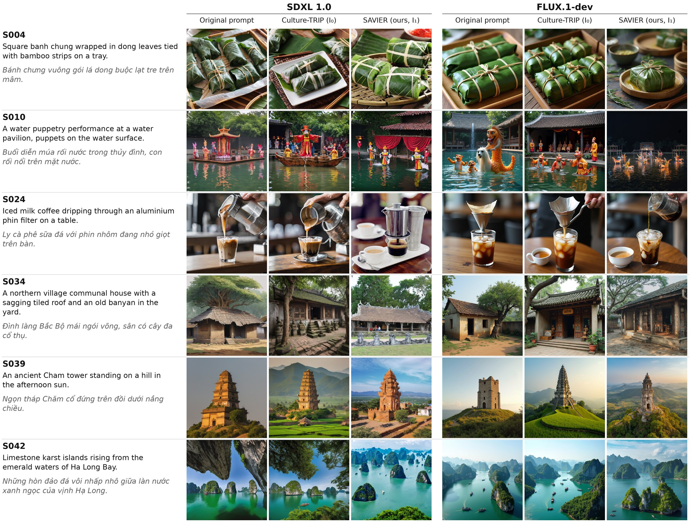
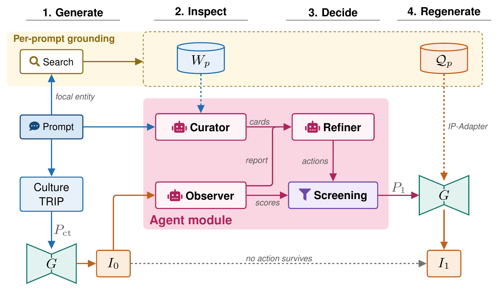
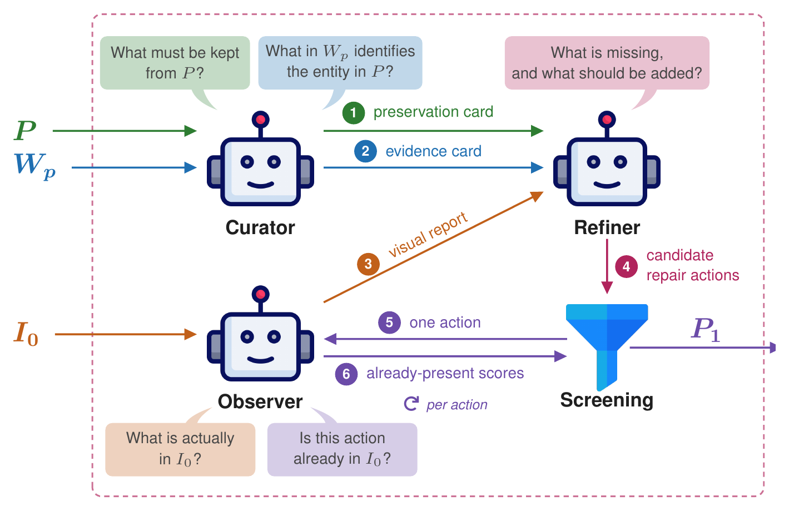

Six selected ViCuP prompts (S004, S010, S024, S034, S039, S042). For each generator, columns show the original prompt, the Culture-TRIP image I0, and the SAVIER image I1; bilingual prompts appear at left. The examples include improvements and regressions and are illustrative rather than a random sample.
Text-to-image models can render plausible Vietnamese scenes while missing cues that identify a focal cultural entity or details explicitly requested by the user. We present SAVIER, a training-free, one-pass repair framework that addresses these requirements separately. An offline, human-verified visual contract links each entity to source-supported cues, while a fixed photograph bank provides visual conditioning. During repair, a Curator separates cultural evidence from prompt-preservation requirements, a prompt-blind Observer describes the initial image, and a Refiner proposes bounded positive corrections. We evaluate the complete pipeline on 50 prompts of ViCuP dataset using SDXL and FLUX.1-dev. Relative to saved Culture-TRIP expansions, SAVIER raises VLM-judged visual-contract fulfillment from 55.6 to 69.6 on SDXL and from 59.1 to 67.3 on FLUX. These results evaluate the complete repair and reference-conditioned generation pipeline rather than an isolated causal effect of the agents.
Repairs Vietnamese cultural depictions without retraining the generator or altering the user's request. It performs one additional generation and fixes evidence and reference images offline rather than selecting them at inference time.
Each role has a controlled view of the information. The Curator separates sourced cultural cues from prompt-explicit details, the Observer reports the initial image without the prompt, and the Refiner converts discrepancies into bounded positive instructions.
50 bilingual Vietnamese-English cultural prompts across eight categories, each centered on a single annotated focal entity that is named rather than visually described.
SAVIER is evaluated against the original-prompt and Culture-TRIP baselines with both SDXL and FLUX.1-dev, using cultural-relevance and contract-based visual criteria.

Overview of SAVIER, read left to right in four stages. The Curator reads the prompt and the retrieved passages, the Observer reads only I0, and the Refiner reads their messages but never the pixels. Proposed actions are screened against I0 before the second generator call.

The agent module, enlarged. Messages are numbered in order. Screening is a deterministic filter over the Observer's scores, not a fourth agent.
| Configuration | Cultural Relevance | Contract Diagnostics | ||
|---|---|---|---|---|
| CAIRE-VN ↑ | CAIRE-CN ↓ | VCFS ↑ | CCR ↓ | |
| SDXL | 2.66 | 2.46 | 52.9 | 20.8 |
| SDXL + Culture-TRIP | 3.00 | 2.54 | 55.6 | 15.3 |
| SDXL + SAVIER | 3.36 | 2.36 | 69.6 | 15.2 |
| FLUX | 2.50 | 2.54 | 44.8 | 13.3 |
| FLUX + Culture-TRIP | 2.50 | 3.08 | 59.1 | 15.0 |
| FLUX + SAVIER | 3.00 | 2.88 | 67.3 | 14.2 |
Results on ViCuP (50 prompts; prompt-level means). CAIRE uses a five-point scale; VCFS and CCR are percentages. VCFS (Visual Contract Fulfillment Score) is the weighted percentage of required visual evidence present. These comparisons concern the complete SAVIER pipeline, including photographic conditioning, rather than the isolated effect of agent-mediated repair.